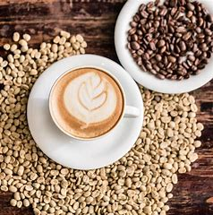

Kopi Kita
Kopi Kita merupakan coffe shop yang berpusat di kota malang, Kopi Kita memiliki beberapa cabang yang tersebar hampir di seluruh Indonesia. untuk informasi lebih lengkapnya anda bisa menekan play button di bawah ini
My Coffeshop


SOCIAL MEDIA